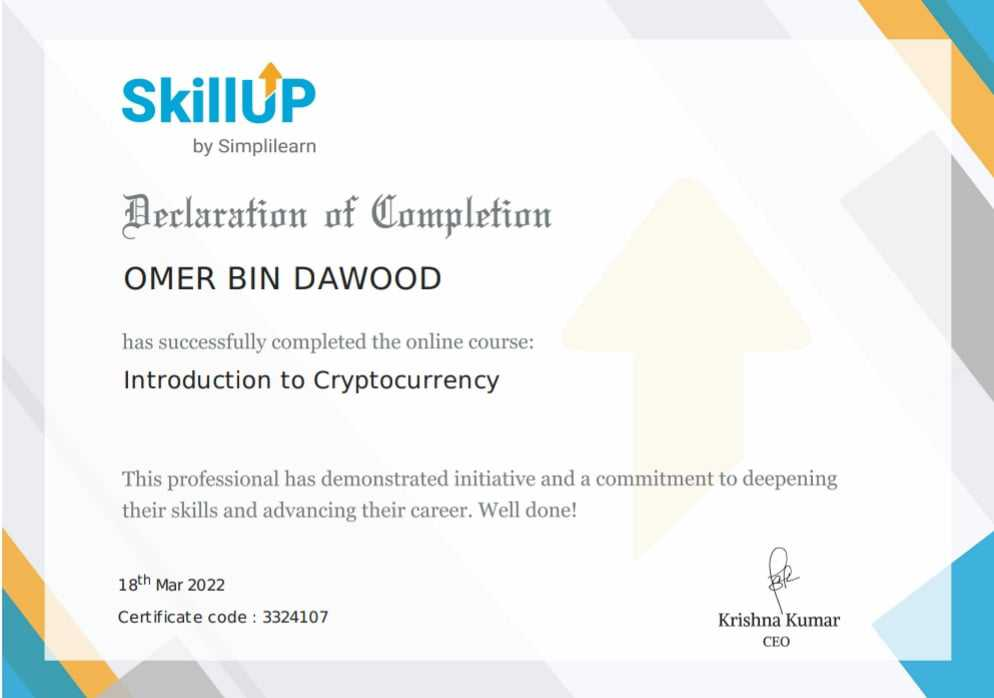

Awards & Certificates
Here are some of the awards and certifications I have earned throughout my academic and professional career.
Best Debater of the School
Won Best Debater of the School Award from Muslim Public Model High School

Meta Data Analyst Certificate
Certified Meta Data Analyst expert in BI

Introduction to Crypto Currency
Having good idea of digital currencies and their mining. Having interes in Web 3 and other technologies.